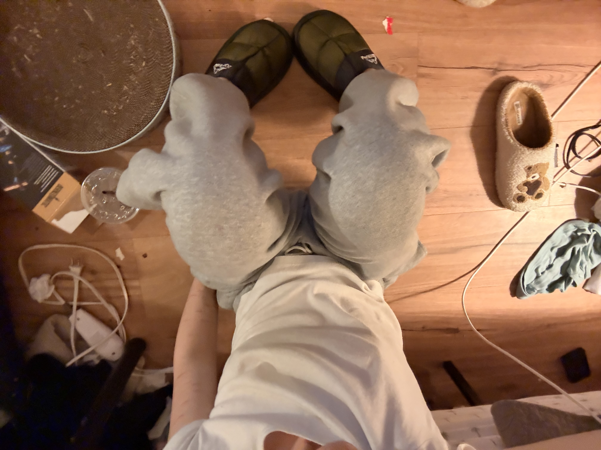
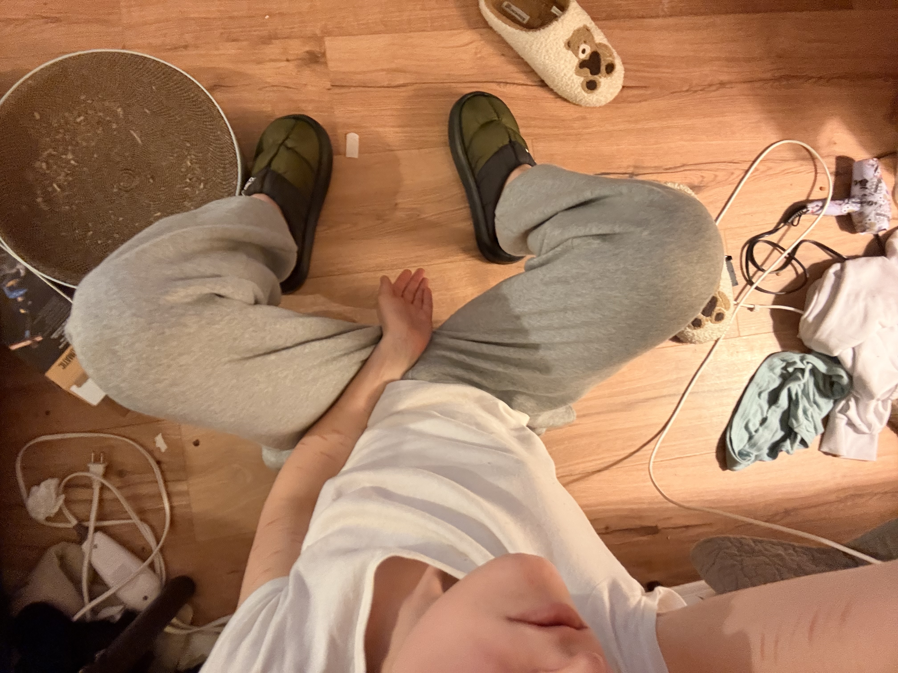

i’m scared authenticity is going 2 b harder 2 find as time goes on because there’s so many things 2 hind behind now. even now, i wonder how many thoughts are actually originated from me or just things i have been fed through my phone. 8:51pm 02/17
i felt so ugly yesterday, but then so beautiful 2day. even after he didn’t like my photo of my face. fuckin bitch At Least I Think Highly. 7:11pm 02/17
sex makes me feel dysphoric as Fuck. 5:59pm 02/17
i seriously feel like shit about doctor in miami not responding 2 me yet. i shouldve had my orchirectomy done when i was in new jersey. but also i tried killing myself twice, so i can’t be 2 hard on myself. i just want to feel aligned. and maybe that isn’t through surgery but through my mind. mom i want mom mom would know what 2 say to me tell me what it is to do and how to feel even better. 5:49pm 02/17
I WANT A FUCKING VAGINA I WANT 2 CUT MY FUCKING DICK OFF I HATE. 5:43pm 02/17
he liked all my posts except the one of my face. i’m not ugly but i feel it. this will pass in 5 mins. 5:35pm 02/17
jasons back. hes fixing an order that got damaged. theres an hour left until close, so I don't really know if hes gonna be here with me. i am shocked he is still here. maybe this means hes closing with me. i keep thinking about weed. i turned the temp up 2 72, and thats also too hot 4 jason but i don’t try and get mad because he does have diabetes and i wonder if that is the reason why he runs so hot. i love jason. 5:34pm 02/17
i dont feel like opening my mouth publicly. when i talk 2 u here, it feels very much like writing in a journal, as i don’t have 2 worry about anyone else but myself. 5:05pm 02/17
maybe if i don’t buy weed or wine 2nite ill reward myself w a cute top or something. 5:04pm 02/17
tempted 2 pickup after work, but i wont. ill be good. 4:35pm 02/17
i hate 2 shit so bad and jason isnt back yet and i feel like if i lock the door 2 shit that will b the divine timing of when he gets back. maybe he has gone 4 the day and just his computer bag. i feel annoying. 4:07pm
there needs 2 be a scientific study that investigates the question of why some people look like they smoke cigarettes and why some do not. 3:39pm 02/17
its strange because these bad habits felt almost normalized in the city in that time, it felt like i was doing something that everyone else was doing. but i think the lesson in that is that i indeed need 2 listen 2 myself, and guide myself like a parent. as of the past 3 years, i have followed no croud. and it has been lonely, but maybe its the first time im acknowledging myself without the influence of pleasing others. people pleasures annoy me, simply because they are dishonest. i appreciate honesty, especially if it is uncomfortable. 3:26pm 02/17
after work and you were working, i would visit you. or maybe id cook something, to have someone and something waiting 4 u. if not through your heart then through your stomach. 3:25pm 02/17
unfortunately i need someone whos gonna fucking spell it out for me. im dumb and deeply insecure at times. 3:24pm 02/17
whats on my mind rite now? nothing. my head is empty and it feels good, but pauses of a dangerous situation. i want to put my headphones in n listen/watch rhony because it eats away time so well, so fucking quick. its past the time jason usually leaves, but i have a feeling he is at the roof or the door because of mari gras. i spelled that wrong, and i am judging myself. 3:23pm 02/17
ive been listening to keith sweat all fucking day 3:19pm 02/17
i wanna go home. jason is somewhere else. i asked my sister 2 bring me food, but then i said no. maybe after work ill go to the store quick, get hair dye and something to make, but honesty i feel like going straight home rite now. ill cook left over noodles or something. i already had two kind bars today and a protein bar. im trying not to eat outve boredom anymore. also being high would cause me 2 binge eat like a motherfucker. all of this will stop. im not hungry right now, so therefore i dont need food. maybe ill go vegan again. i wanna loose 15lbs. 3:10pm 02/17
Dumb Bitch 1:58pm 02/17
there are times where i feel i have not used my time wisely. but who is the adjudicator of my own time? i think growing up mite be the hard swallow of inevitable bad things. 1:53pm
if i had someone 2 love on, i would be in the mood to share a meal, to make a meal and share conversation. i would do all things kitchen sink. 1:42pm 02/27
okay allow me to romatize alittle bit. because i am feeling giddy at the thought. i am listening to spaghetti western / italian grit music. i feel like being out in the sun. i want to wear a dress tomorrow. im smiling, im smiling as i talk to you. im tempted to by clothes after work, but i wont. maybe i won’t. after work im gonna go 2 walmart and grab hair dye. i feel my roots are beginning to make me insecure. darken my eyebrows too. theres a sense of urgency in this pursuit. so maybe that is an incline 2 not do it; as i do have black eyebrow dye and hair dye at home. im trying to be smarter with my money, especially because i am moving, and i should save my money. maybe ill go to walmart and get indgrediants to make something. maybe this is just me trying to pass time. and think about what i dont have. i have enough. i have enough. i have enough. i dont need anything more. so i will reist the urge, and saving is like spending money but for my future. i just want to feel cute enough, but that is in trusting i am already enough, i have everything i already need. maybe the documentation of my outfits is the proof of my style. 1:38pm 02/17
questions given to me by my therapist
if i already believed i was feminine enough, how would i move 2morrow?
uncritical in my movement. i don’t think i would search for validation in my own perception of myself, therefore maybe i would move with much more ease. maybe i would move with less gravity.
what does “secure Mattea” do when she wakes up?
she doesn’t look at her phone. she doens’t look in the mirror, and she doesn’t write things in2 her arm. before she even leaves the bed she plays a song, closes her eyes and pictures all the things she’s grateful for. she drinks two cups of water before having black coffee. she stretches. she puts on a cleansing movie, or something for the background. she doens’t worry. she sets her intention and prays.
what habits would the grounded version of myself naturally drop?
smoking weed, binge drinking, cutting my body, internalizing every thought that passes through my mind
what does femininity feel like in my body when im calm?
i don’t know how to describe it other than the word powerful. it feels like i can breathe underwater. it feels inherit and it feels absolutely effortless.
when do i feel most like myself?
probably when i am silent and when i am dancing when i am actively loving on someone.
what would change if i stopped scanning for “proof” and started living for certainty?
i probably would feel less exhausted and less like a candle in the wind; my purest self would shine through. so the thing that would change is the energy i put out, going directly back in2 myself.
what are three daily small beghaviors that could compound into a new life in 6 months?
daily pilates, no smoking, and reading for one hour.
where am i leaking energy?
when i worry, when i smoke, when i cut, when i drink, when i have meaningless sex with strangers, when i don’t push through my uncomfortable feelings.
what does discipline look like if its loving, but nto punishing?
it looks kind, and necessary. it looks like a hairbrush.
what would it mean to be internally safe?
2 be fully at peace, to be open 2 receive good things.
if my hormones are working (for which they very much are) what am i free to focus on instead?
my future, my career in nursing, scratching the itch 2 help others that need my help.
what kind of partner/friend does my secure self attract?
someone fun, someone unpretentious, someone patient, someone grounding, someone i could build a life with.
if i am trusted that i am becoming more myself everyday, by getting rid of the habits that are not me, what would i stop fearing?
myself, and being uncomfortable, not getting things right away feels as if everything is slipping through my finger tips. maybe.
i want my ankle on your ankle, as we sit across an outdoor table sharing oysters over ice. doesn’t that just sound so so nice. 12:55pm 02/17
tits and ass after work i will dye my hair n go 2 9pm pilates. 12:41pm 02/17
i am genuinely so fucking bored and its not even 1. i just don’t like sitting here doing absolutely nothing. what frusterastes me sometimes is jason does everything himself. maybe its distrust for my employment, but i can’t help but want 2 feel useful. him being here is also making me limited in the my expression 2 move time. without jasons presence i can listen and watch without guilt. i was high earlier, but now its wearing off. which is very good. i want 2 be sober. i want 2 feel like a cold glass of water. 12:38pm 02/17
i’m really not in a people mood, i don’t wanna sit behind this desk. i am being ungrateful.
i am indeed very sad but i understand how needed the sadness mite be because it is the process of what has happened 2 me. maybe the trick is understanding not 2 wallow in pity. i wake up sad because i wake up without my mom. it feels inevitable, as it is something i have 2 learn 2 dress up and make room for. 11:28 02/17
sometimes i’m just like You Need To Shut The Fuck Up And Just Be. 11:25 02/17
i said in the past that friends w benefits is a term used by men, but i have been late 2 find out that Alanis Moresset (spelled that wrong) has indeed invented the term. so it was a term coined by woman, used for men. i just have been feeling like shit over the casualness of sex. but maybe that’s more of my guilt. it just has me in disbelief that people actually go through life sexually with absolute no personalities. if someone views sex so casually, will that make them more inclined 2 cheat? reading this back, maybe the secret 2 casual sex is being disciplined? but sex overall isn’t something 2 b disaplined in. 11:12 02/17
i’m annoyed as actual fuck like jason needs 2 leave i wanna b by myself and i honestly don’t know why im here if he is here it is absolutely dead and i just wanna go home and be with my dad. i keep hearing clipping and it fucking sounds like he’s clipping his nails. i honestly think it’s because my bag is in the back and it triggering me 2 think he’s going through all my shit. 11:07am 02/17
i hate being so reactive, i keep it internalized until i makeout with my journal. 10:52am 02/17
to do today: work 10-6, watch movie with Papa, n inject my yummy medication. 10:51am 02/17
i rescheduled my fucking labs and folx appointment and i’m declaring that it is indeed going 2 b 4 the last time. jason is here and he’s here because he wants 2 escape the family visiting him (get it) but it is slow as actual fuck. it’s tuesday. and tuesday is always like pulling teeth. i feel determined 2 drag myself through the hot coals on this period of my life. it almost feels cosmic. someone from my past had found me yesterday, and it has me wondering if then do we really get 2 escape the past? why do some people have the -what feels like sheer luck- ability 2 free themselves from that tether. taking the big ball 2 the grave. however, maybe they “pay 4 it” in the next life. i watched a video essay this morning that basically gave me the reassurance that i needed. it talked about the social pressures associated with being loved. this idea 4 women that there is this sense of a window of opportunity of being lovable. and also, being loveable isn’t this romanticized idea. love is going 2 be uncomfortable. love is looking and accepting the bad, even within yourself. it’s inevitable. it’s human. it’s beneficial. and in turn that frees me from the guilt of the past, as everything has it’s benefit, even if it was spoonfed through tabasco sauce. what else is on my mind? i still am waiting a week since my past email 2 email doctor in miami aka god. i want my vagaina terribly. therapy has given my the consciousness 2 understand that i can’t put all stock of my happiness in2 having a vagaina. i don’t even know if i have all the rite words 2 describe what it actually is that i am experiencing as maybe it is something 2 be communicated through experience. am i selfish 4 wanting a vagina? i ask myself why do i want a vagina? i want one. ive always wanted one. its my 4 year olds dream. i remember being 5 and cutting my penis with nail clippers. am i doing it 4 her? i recently got hit on by the most beautiful woman and i want 2 be with woman, but there is a deep part of me that only feels acceptable with woman if i had a vagaina. mainly because i hate my penis, so i can only imagine through another set of eyes. but then again, i could b making all of this up. i think maybe the reason i don’t feel accecptable is4 the reason that i would never be the girl 2 fuck, as i was born 2 be the woman who gets fucked. maybe the second i feel comfortable in my skin, god will show me someone who feels comfortable touching my skin. im not really internalizing any of this; but an acknowledgement of these passive thoughts this morning. 10:41am 02/16
 
outfit i wore 02/16
i realize that it is definitely because i am insecure and i need to get over myself. 11:05pm 02/16
tonight i relapsed 10:35pm 02/16
i absolutely feel like killing myself. i feel like when i was talking about my one nite stand j was secretly talking about him as i wonder why my brain is telling me he thinks im a walking pile a shit a vile woman a unpure umpire a gross divider onto the fucking grace that once once was. blah blah blah blah 10:35pm 02/16
fuck all these men i reclaim all of my power back 2 me Eat My Shit 10:32pm 02/16
i am absolutely beautiful i must never ever forget For My Mothers Sake 8:29pm 02/16
bitch Tom Jones is Sexy as Fuck the Orginal 8:25pm 02/16